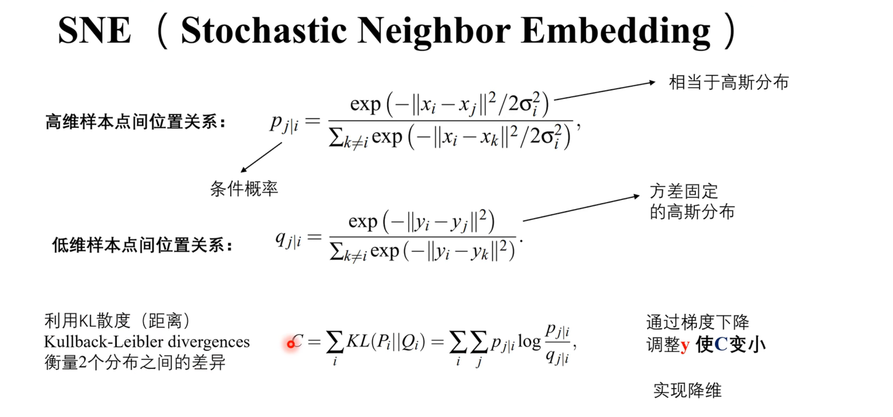
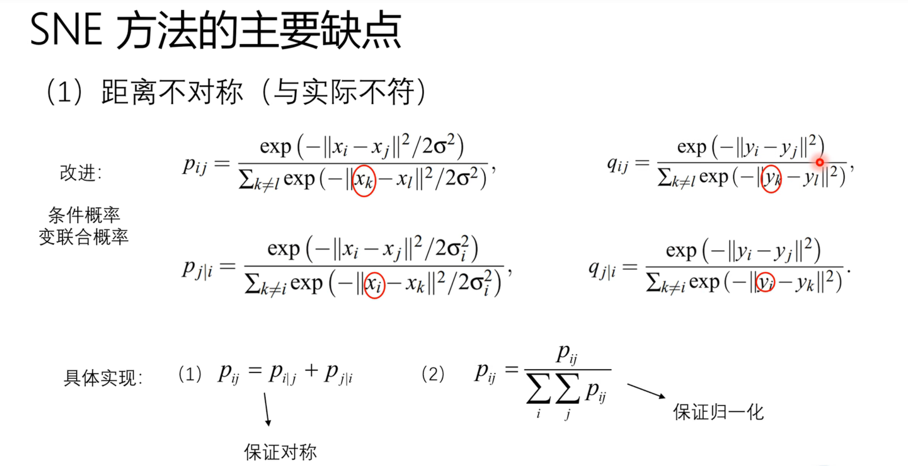
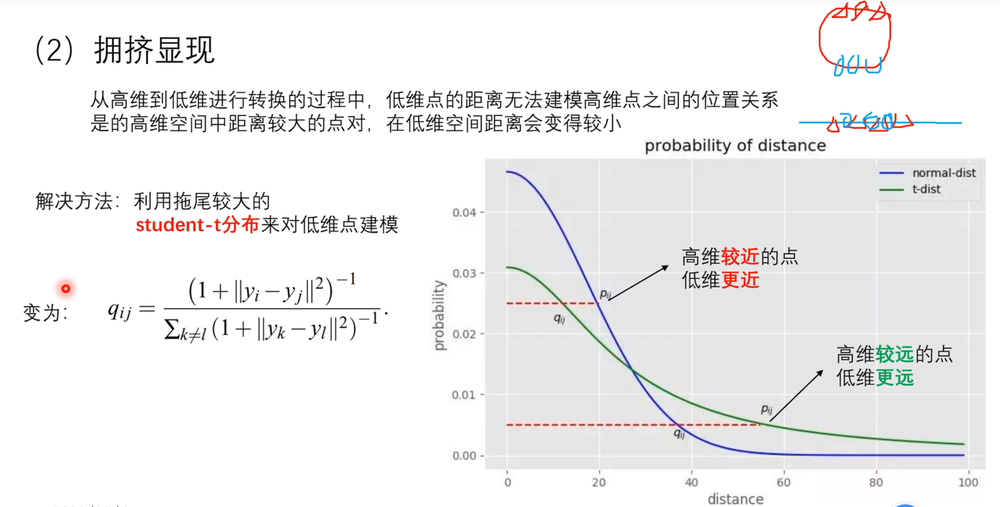
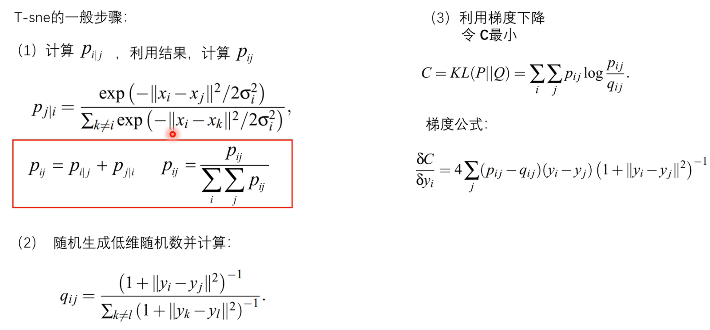
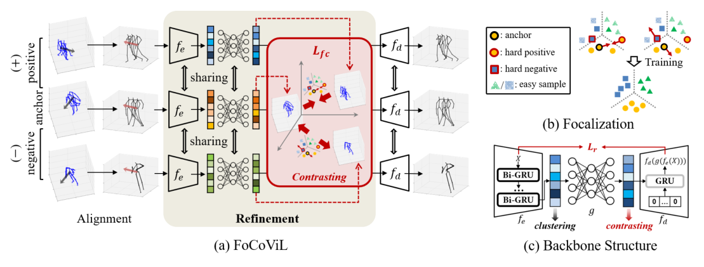

小鼠day5-tsne学习+paper完善阅读
day5 首先先学习一下T-SNE算法 后面再回到paper中去完善一些阅读的细节部分
T-SNE学习
SNE（Stochastic Neighbor Embedding）
T-SNE实际上是SNE的一种变种，因此先对SNE的概念有一个认知。

这里附上了一张鲁东大学课件中的配图，感觉讲的还是比较清楚的。
首先，SNE主要分为三步：
- 寻求高维样本点间的位置关系
- 寻求低维样本点间的位置关系
- 用KL散度衡量两个分布之间的差异（移动使属于同一分布的更接近）
那么第一步是怎么做的呢，这里用了个条件概率的公式，分子这边使用了一个类似高斯分布的东西，分母方面是一个求和，这个公式的意义在于，相当于衡量以i为中心，其他的点j的一个位置关系，也就可以理解成概率越大，在i附近出现j的可能性就越大，也就是条件概率越大，两个样本点之间是更加接近的。低维样本点之间的位置关系计算感觉也差不多，只是相对而言是一个固定了的高斯分布。之后引入KL散度的计算去衡量高维的分布和低维分布之间的距离 通过调整低维样本中的y来使C变小实现降维

SNE算法主要有两大缺点，第一个缺点是距离上面会出现不对称的问题，可以通过把条件概率改变成联合概率来解决，从公式中可以理解成是把分母中计算的指标进行了变化，原本是确定一个点i，计算其他的点到他之间的距离，而联合概率是选择任取两点做计算后相加。

还有一个拥挤问题，这个问题会出现在高维向低维进行转换的过程中，可以类似理解成一个二维的图像中的点直接往一维进行投影，那很多点可能会挨在一起，这样的低维模型是没有办法体现出高维点之间的位置关系的，这个时候就需要引入T分布来进行解决。高维的部分仍然保持高斯分布，而在低维中使用T分布，t分布有“长拖尾”的性质，可以理解成稍微宽一些，这样操作就可以使高维空间较近的点在低维空间中也较近，高维中越远的点在低维中越远。进而就改写成了T-SNE算法。

然后我们不难发现，xi是已知点，yi是我们要求的点，那么其中还存在的δ变量是一个什么东西呢？根据本身分布的定义，它是作为方差出现在这里，大致上可以决定一个分布的宽窄（因为在2δ的区域内分布的点会较多，超过2δ之后的数就会变得很小），所以这里的随机近邻还有个作用就是根据xi附近的邻近点的多少来调整δ。为了确定δ，会设置一个固定的参数Perplexity（困惑值），来表示分布的熵，大致的概念就是确定一个点周围有多少点会参与进后续的运算，后面就会尽可能的让熵的计算值近似于困惑值的对数来得到一个结果，从而求得一个确定的δ。
paper细节完善
这里主要就是对这篇paper去做一些回顾，在intro中主要分析了在这个研究领域内的一些现有问题，这边简单概括就是以下几方面：
- 在自然环境下和长时间的情况下没有精度较高的测量方法，只能粗略的估计动物的姿势、动作和行为状态。（也就是已有的测量方法基本上在实验室环境下且持续时间较短的数据集上有较为精准的结果）
- 动物的运动和行为被认为是有组织规则的，而这样的组织规则并不能针对所有的行为，只有少部分的动作被命名。（我这里的理解是，比如一个人要去澡堂搓澡，他会先拿脸盆，然后从衣柜里拿出要换洗的衣物，再把要拿来洗澡的肥皂毛巾也拿来放进脸盆中，这之后再去澡堂开始洗澡。这个行为可能会被定义成“去澡堂搓澡”，但是目前对小鼠这样的动物的研究也许只停留在“拿脸盆”这一步，又或者连这个动作也不能明确。
- 一些实验的结果缺乏跨实验室的行为可重复性（小鼠可能只对特定环境敏感）
- 目前为止的技术没法跟踪被遮挡的landmarks和跨越大范围的运动姿势。
因此，文章主要在两块地方做出了contribution：
- 提供一个3D rat behavior dataset，结合动作捕捉、深度学习和身体穿刺，实现了对老鼠头部、躯干和四肢的长期跟踪，相比卷积网络具有更高的精度和鲁棒性。
- 开发了一个机器学习的分析框架，可以识别到刻板的生物体行为、行为序列和行为状态，从而可以去描述自然行为的组织原则（类似于制定一个可以说明运动规律的语法），并且可以表示在脆性X染色体综合征以及兴奋剂状态下的扰动。
他这边对于数据集的采集也做了一些实验，首先因为这个实验中需要对小鼠身上进行穿孔，做了一些对比实验来表明在小鼠身上打钉并不会带来太多的行为上的干涉，同时也列举了一系列数据来表示小鼠身上的标记物存留（识别到的时间），表示大部分的时间还是可以获取到数据的。考虑到和其他视觉跟踪的方法一样，未处理的动作捕捉记录容易因为自身或者环境遮挡而导致前肢后肢的标记丢失，那么在文章中他提到了用了三种方法来应对不同的标记丢失的时长：
- 三次插值法：对于短于5帧（17ms）的确实，对于每个笛卡尔标记位置的每个间隙分别应用三次插值来进行填充。
- 随机森林回归： 对于长于5帧的间隙，在标记缺失但是又5-8个相邻标记良好的帧中，使用经过训练的随机森林回归法对标记进行估算，从跟踪良好的相邻标记中预测确实的标记的位置。
- 在标记及其一个或多个邻接markers缺失大于17ms的间隙中，用一个时间卷积网络（TCN），结合了所有标记位置过去的时间信息来弥补缺失数据（TCN的特点就是只能从过去推到到现在）。
在得到这样的一个高精度和长时间尺度上精确跟踪标记的数据集后，就将其运用于后续的分析框架的研究中。 在这个过程中结合了过去方法中的监督行为分类和无监督行为分类的思想。将80个常见的啮齿动物行为之间区别的特征（监督信息）和60个广泛概括运动的姿势和运动学的特征相加得到140个特征矩阵，在一个500ms的时间窗口内封装了动物的行为。（这里我的理解是比如他以5ms的窗口来进行划分，在这个窗口中可以分离出140个特征矩阵，从这些特征矩阵中去判定动物大概在做一些什么行为）
在这之后，从所有的行为中去识别一些重复的行为实例，使用了一种行为映射方法，首先就用T-SNE将高维的行为特征向量嵌入到二维中，这之后使用高斯核做平滑，从而可以一定程度上去噪并且提高边缘检测的效果，在这之后用分水岭算法进行处理，将不同的行为进行分类。经过这些来验证这个方法可以对啮齿类动物有比较全面的观察。
接下来的一块是对于行为序列&状态的一些分析，在文章中一些常出现的行为比较容易被识别，这些会被称为“stereotype”，因为文中认为小鼠的运动时非马尔科夫的行为结构（未来的行为不仅和现在的状态有关，也和过去的状态有关）这里设计了一个算法用于识别在固定时间尺度上具有想死行为的模式的时间片段长度，举例来说有15s和2min这两种时间尺度，在15s的时间尺度上可以识别出一些顺序有序的行为，比如小鼠梳理面部、身体等或者是在任务中训练出来的压水杆，这种较短的被称为序列，而在2分钟的尺度上，小鼠可能会以不同的顺序依次做一些行为，这些行为开始和结束的时刻没有确定的类似模板的顺序，所以把这些称为状态。在经过这个算法处理后，将这些行为和状态形成了一个分层表示，体现出比马尔科夫行为更加的结构化（这一段感觉都是在说明小鼠的行为就应该是一个非马尔科夫的层次结构），而且经过一些学习发现行为中最明显的长时间尺度结构是10-100s的时间尺度的模式。
后面是一些药物和疾病的实验 比如用了咖啡因和安非他明这两种兴奋剂，都能提升小鼠积极性活动的时间，但是咖啡因只会提升梳理毛发的时长，安非他明会改变行为的一些状态，比如引发转圈圈这样的行为。关于脆性X综合征的研究也用了对照实验，发现基因敲除的也会有更多时间在梳理毛发上。
后续还有一些分类标注上的说明，比如说如果聚类结果中有百分之40的部分是在某一个行为比如梳理中，就把他定义为“梳理”，如果有超过一般的时间是活跃状态就会定义成活跃，如果聚类包含至少10%的任务相关时间点，则它们被标记为与任务相关，这些时间点把到达5秒的帧定义为序列，把到30秒的定义为状态。
FoCoViL学习
之前读完了这篇paper的introduction，大致知道他的意义在于把同一时刻不同视角下的同一帧图像能够更好的聚成同一类，那么具体的实现就需要看一下method中提到了哪些操作和技巧了。
Methodology
我们的目标是逐步学习一个由视觉不变动作特征组成的有效表示空间，用于判别聚类。为了实现这一目标，我们提出了FoCoViL，它消除了视图对基于rnn的自编码器主干提取的特征级表示的影响，如图2所示。我们首先执行一个粗层次的转换来对齐不同的观点。然后，在细化步骤中，我们通过寻找相同动作场景在不同视点下的内在相关性，从潜在空间中分离出剩余的特定于视图的特征。由于不同样本对8空间学习的贡献不同，其中硬正(即类内差异)和硬负(即类间相似性)的贡献更大，我们进一步提出了一种集中的对比损失，通过自适应调整它们的训练强度来应对学习复杂性的不平衡，从而提高收敛潜在空间的质量。
在具有V个视点的训练集$\hat{X}$中，我们将人类动作$\hat{X}i^u∈\hat{X}$的第i个场景表示为姿势序列，即$\hat{X}i^u = {\hat{x}{i,1}^u,\hat{x}{i,2}^u,…,\hat{x}{i,T}^u}$，在特定视点u∈V下。每个位姿，$\hat{x}{i,t}^{u}\in\mathbb{R}^{3\times N}$在帧t处包含了三维骨架下的N个关节位置，t为最大时间戳。作为一种自监督分类任务，我们倾向于在没有动作标签指导的情况下学习一个视不变映射函数。
